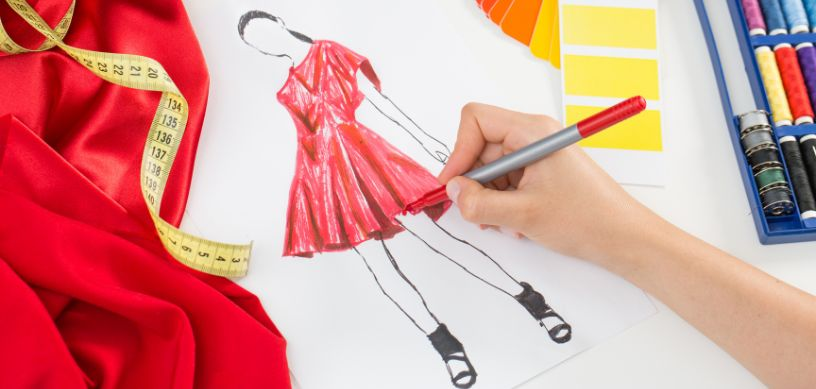

France is well known all over the world for its rich political and cultural heritage. Events like the French revolution have left a significant mark on the world and changed the course of history forever. The country also has a history of embracing the arts and all things creative. It is no wonder then that France is also home to some of the best fashion houses in the world.
France has been the premier destination for high-fashion since time immemorial. Paris is often called as the fashion capital of the world and with good reason, it is the creative headquarters of iconic fashion brands like Chanel, Louis Vuitton and Dior. The fashion week organised in Paris every year brings in the best of designers, models, and fashion enthusiasts from around the globe. The ever-innovating fashion houses in France spearheads the fashion movement around the world.
Why study fashion in the France?
- France, especially Paris can be considered the headquarters of international fashion making it great place for build a network and grow your career.
- The country’s rich history in couture and fashion gives the students a better understanding of the fashion trends around the world and how they have evolved into what it is today.
- You get to rub shoulders with the best in the industry including designers, stylists, and fashionpreneurs.
- Students get to the study at the leading edge of fashion, learning and witnessing in real time the making and breaking of global fashion trends.
- Beyond fashion, France is creative and cultural hub, the immersion in which gives students an introduction to a completely different way of thinking and living.
- All the historic landmarks and sceneries that are splattered all across France can also serve as inspiration for your creativity.
Top universities in France to pursue fashion
There is no better place to understand and learn about fashion than at the epicentre of it all that is France. Here are the top universities in France for international students to study fashion:
- École des Beaux-Arts, Paris
- Institut Français de la Mode (IFM), Paris
- Ecole de la Chambre Syndicale de la Couture Parisienne, Paris
- Paris College of Art, Paris
- La Sorbonne Université, Paris
- ESMOD International, Paris
- KEDGE Business School, Paris
- Université Paris 1 Panthéon-Sorbonne, Paris
- HEC Paris, Paris
What’s the cost of studying fashion in France?
Tuition fees vary widely depending on the institution and program. On average, fees range from €5,000 to €20,000 per year. Students also need to consider living expenses which can range from €800 to €1,500 per month depending on the city.
Eligibility Criteria to pursue fashion in France
In order to study fashion it is generally recommended to have portfolio of your design or previous work that can highlight your interest and passion in the field. Other general requirements include language proficiency proofs (English or French depending on the program), letters of recommendation, and a personal statement also known as statement of purpose(SOP). The students will also have to show an acceptance letter from an accredited French institution and also provide proof of financial stability to cover tuition and living expenses in order to get a student visa to study in France.
Job Opportunities After Completing fashion in France
Since France is a fashion powerhouse it is easy to get a job in the field and start your career once you graduate. Here are some of the job opportunities that will be open to you after you complete your fashion education in France,
- Fashion Designer: Design clothing, accessories, and footwear designs. They are often the faces of fashion houses and command immense respect in the fashion world.
- Fashion Stylist: Coordinate outfits and looks for individuals or fashion shoots.
- Fashion Marketing and PR Specialist: Promote fashion brands and products while managing public relations of a company.
- Fashion Editor: Create fashion content for magazines, websites, or other media.
- Costume Designer: Design costumes for the characters in theatre, film, and television.
- Fashion Consultant: Advise clients on fashion choices so that they can dress according to the trends.
- Fashion Production Manager: Manage the production process for fashion items.
FAQs:
-
What are the top fashion schools in France for international students?
Some of the top fashion schools in France include the Institut Français de la Mode (IFM), ESMOD International, Paris College of Art, and the Ecole de la Chambre Syndicale de la Couture Parisienne. Students can go through the various programs that are offered by these institutes and many others and then pick a suitable one based on their needs.
-
Do I need to speak French to study fashion in France?
Many fashion schools do provide courses in English. However since fashion itself pretty embroiled in the culture of France itself it is advisable to learn French since it can seriously be of help the student to have an edge especially if they choose to pursue a career in France itself.
For further assistance or queries students can contact us, Edwise International and avail our wide range of services for students on destinations like UK, USA, Canada, Australia, New Zealand, Singapore, Ireland and many other countries.